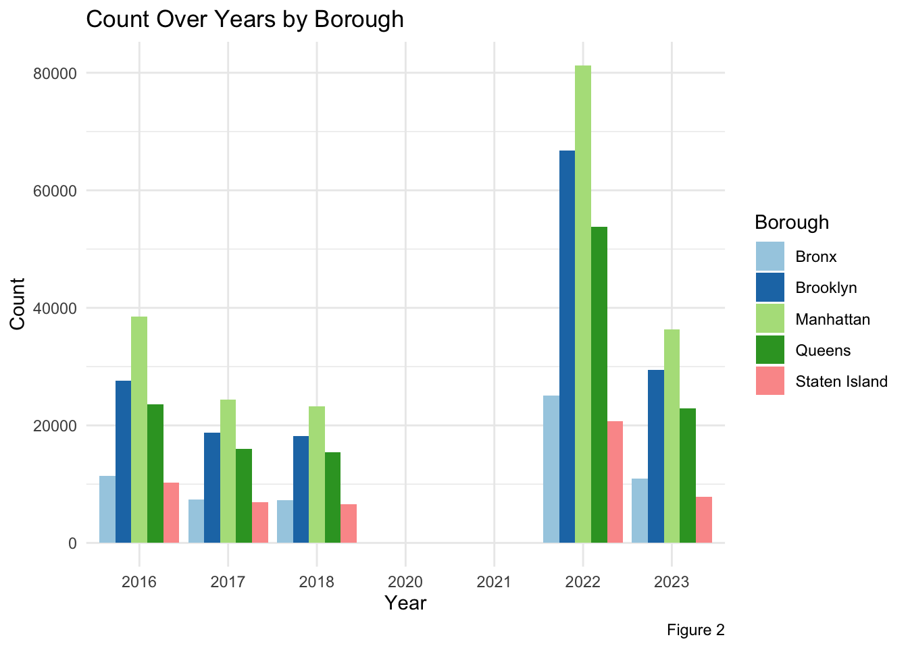
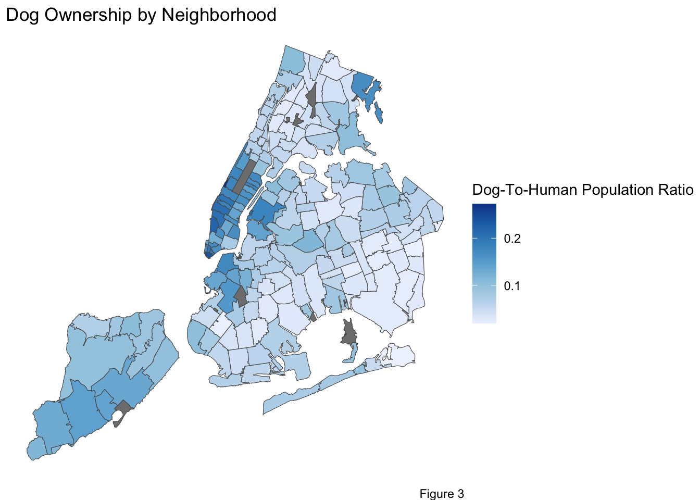
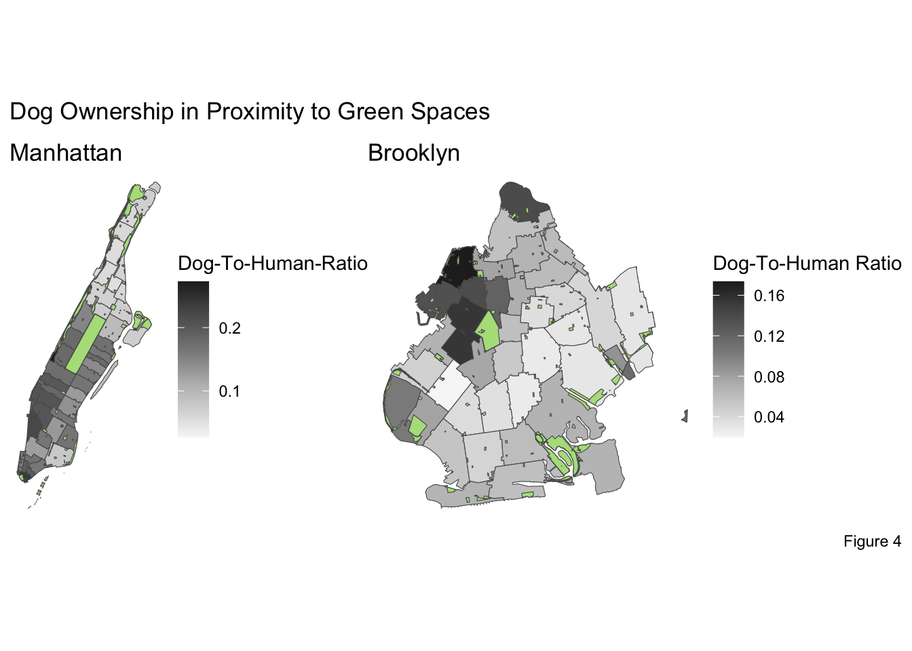
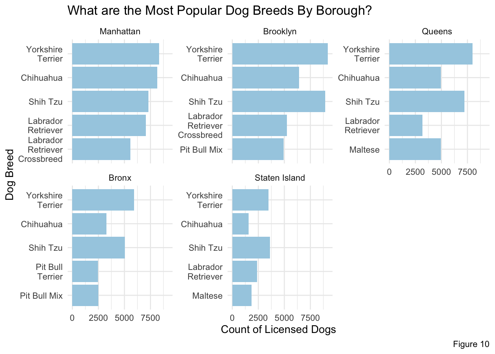
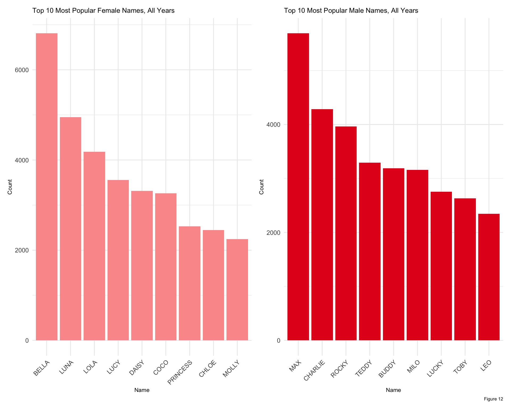

To begin our analysis, we explored dog ownership trends over time to draw conclusions on the growth of New York City’s dog population in relation to cultural shifts and world events.
Code
dog_license_data$BreedName[dog_license_data$BreedName =="Unknown"] <-NAdog_license_data$BreedName[dog_license_data$BreedName =="Not Provided"] <-NAnames(dog_license_data)[names(dog_license_data) =="Extract Year"] <-"Year"dog_license_data <- dog_license_data |>group_by(Year) |>mutate(unique_types =n_distinct(BreedName))counts <- dog_license_data |>group_by(Year) |>summarise(count =n())ownership <-ggplot(counts, aes(x =factor(Year), y = count)) +geom_bar(stat ="identity", fill ="#A6CEE3") +labs(title ="Licenses Acquired by Year", x ="Year", y ="Count", caption ="Figure 1") +theme_minimal() ownership
Figure 1 plots total dog licenses acquired by year in New York City. While we cannot directly observe the counts during 2020 and 2021, there is an interesting spike present in 2022. It is clear that overall dog licenses spiked post-COVID before returning to a level similar to that pre-2020.
Code
counts_zip <- dog_license_data |>group_by(Year, ZipCode) |>summarise(count =n())counts_zip$borough <-NAcounts_zip$borough[counts_zip$ZipCode >=10001& counts_zip$ZipCode <=10128] <-"Manhattan"counts_zip$borough[counts_zip$ZipCode >=11004& counts_zip$ZipCode <=11697] <-"Queens"counts_zip$borough[counts_zip$ZipCode >=11201& counts_zip$ZipCode <=11239] <-"Brooklyn"counts_zip$borough[counts_zip$ZipCode >=10451& counts_zip$ZipCode <=10474] <-"Bronx"counts_zip$borough[counts_zip$ZipCode >=10301& counts_zip$ZipCode <=10314] <-"Staten Island"counts_borough <- counts_zip |>group_by(Year, borough) |>summarise(totalcount =sum(count))counts_borough_w_2020 <- counts_borough |>bind_rows(data.frame(Year =2020, borough =unique(counts_borough$borough), count =NA)) |>bind_rows(data.frame(Year =2021, borough =unique(counts_borough$borough), count =NA)) |>arrange(borough, Year) |>filter(!is.na(borough))# Bar chart for count over years by boroughborough_bar <-ggplot(counts_borough_w_2020, aes(x =factor(Year), y = totalcount, fill = borough)) +geom_bar(stat ="identity", position ="dodge") +labs(title ="Count Over Years by Borough", x ="Year", y ="Count", fill ="Borough", caption ="Figure 2") +theme_minimal() +scale_fill_brewer(palette ="Paired")borough_bar

To further investigate dog license levels, we decompose overall counts by year into borough level counts in Figure 2. Manhattan and Brooklyn contribute the most to license counts in all years in our sample. We see that dog licenses spiked in 2022 across all five boroughs, before returning to a less inflated level in 2023.
While this borough breakdown provides insight into broad spatial trends in dog licenses, we wanted to take a closer look at the geographic distribution of dogs in New York City. In this portion of our analysis, we explored New York City’s dog population spatially to draw conclusions about the impact of geography on population characteristics.
Code
dog_license_count_by_zip <- dog_license_data |>group_by(ZipCode) |>summarize(count =n()) |>arrange(desc(count)) |>mutate(ZipCode =as.character(ZipCode))zip_sf_with_dog_count <- zip_code_sf |>left_join(dog_license_count_by_zip, by="ZipCode")zip_sf_with_dog_ratio <- zip_sf_with_dog_count |>mutate(dog_to_human_ratio = count / pop_est)ggplot() +geom_sf(data = zip_sf_with_dog_ratio, aes(fill=dog_to_human_ratio)) +scale_fill_distiller(name ="Dog-To-Human Population Ratio", palette ="Blues", direction =1) +theme_void() +theme(panel.grid =element_line(color="transparent")) +labs(title ="What NYC neighborhoods have high dog ownership?", caption ="Figure 3")

From Figure 3, we observe that the zip codes with high ratios of licensed dog ownership tend to be in or in close proximity to Manhattan. The highest density zip code appears on the Upper West Side of Manhattan, a largely residential neighborhood. Density remains high in midtown and lower Manhattan, but is lower in Upper Manhattan. This trend is similar in Brooklyn. Neighborhoods closest to lower and midtown Manhattan have a high count of licensed dogs while neighborhoods deeper into Brooklyn and in Queens tend to have lower counts. Neighborhoods in Staten Island showed a high ratio of dog ownership as well. This graph, and in particular our observation on the Upper West Side, provoked us to ask another question. In the next figure, we explore the impact of green spaces on licensed dog population.
Code
manhattan_boundary <- borough_boundaries_sf |>filter(boro_name =="Manhattan")zip_sf_manhattan <-st_intersection(zip_sf_with_dog_ratio, manhattan_boundary)open_spaces_sf_manhattan <-st_intersection(st_make_valid(open_spaces_sf), manhattan_boundary)manhattan_plot <-ggplot() +geom_sf(data = zip_sf_manhattan, aes(fill=dog_to_human_ratio)) +geom_sf(fill ="#B2DF8A", data = open_spaces_sf_manhattan) +scale_fill_distiller(name ="Dog-To-Human-Ratio", palette ="Greys", direction =1) +theme_void() +theme(panel.grid =element_line(color="transparent")) +labs(title ="Manhattan")brooklyn_boundary <- borough_boundaries_sf |>filter(boro_name =="Brooklyn")zip_sf_brooklyn <-st_intersection(zip_sf_with_dog_ratio, brooklyn_boundary)open_spaces_sf_brooklyn <-st_intersection(st_make_valid(open_spaces_sf), brooklyn_boundary)brooklyn_plot <-ggplot() +geom_sf(data = zip_sf_brooklyn, aes(fill=dog_to_human_ratio)) +geom_sf(fill ="#B2DF8A", data = open_spaces_sf_brooklyn) +scale_fill_distiller(name ="Dog-To-Human Ratio", palette ="Greys", direction =1) +theme_void() +theme(panel.grid =element_line(color="transparent")) +labs(title ="Brooklyn")(manhattan_plot | brooklyn_plot) +plot_annotation(title ="Does proximity to green space affect dog ownership?", caption ="Figure 4")

In Manhattan, zip codes surrounding Central Park displayed the high ratios of dog ownership. Particularly the Upper West Side which is surrounded both by Central Park to the East and Riverside Park to the West. There were some zip codes of Manhattan which did not fit the pattern. At the North tip of Manhattan is two large parks - Inwood Hill Park and Fort Tyron Park. However the zip codes surrounding these had relatively low numbers of licensed dogs.
In Brooklyn, the trend is equally apparent. Zip codes surrounding Prospect Park, the second largest park in Brooklyn, had the highest licensed dog populations. Zip codes surrounding the largest park, Marine Park, had slightly higher counts relative to surrounding neighborhoods in outer Brooklyn. There are also high count neighborhoods surrounding Dyker Beach Park in South Brooklyn and Fort Greene Park in North Brooklyn.
Figure 4 led us to conclude that proximity to green space is correlated to dog population. This is a logical conclusion as being close to a green space allows ease of walking and socializing your pet.
As we showed in the above two figures, geography has an impact on rates of dog ownership. We further wondered, does geography affect the most popular dog breeds?
Code
dog_license_breed_count_by_borough <- dog_license_data |>mutate(BreedName =recode(BreedName, "American Pit Bull Mix / Pit Bull Mix"="Pit Bull Mix", "American Pit Bull Terrier/Pit Bull"="Pit Bull Terrier")) |>left_join(zip_code_to_borough, by="ZipCode") |>filter(!is.na(Borough)) |>filter(BreedName !="Unknown") |>group_by(Borough, BreedName) |>summarize(count =n()) |>arrange(desc(count)) |>slice_head(n=5)ggplot(dog_license_breed_count_by_borough, aes(x = count, y =reorder(BreedName,count))) +geom_col(fill ="#A6CEE3") +facet_wrap(~Borough, scales="free_y") +labs(title ="What are the Most Popular Dog Breeds By Borough?") +labs(x ="Count of Licensed Dogs", y="Dog Breed", caption ="Figure 5") +scale_y_discrete(labels =function(x) str_wrap(x, width =15)) +theme_minimal()
From Figure 5 above, we observed that the popularity of dog breeds across boroughs is more alike than it is different. Every borough had Yorkshire Terrier as the most popular licensed dog breed, followed by Shih Tzu. Chihuahaus appeared in the top five for all boroughs. Both these breeds are small in size, and thus, are practical dogs to raise in densely populated areas. The Bronx was the only borough to not include Labrador Retrievers in the top five, instead showing high popularity of American Pit Bull Terrier mixes.
To look at breed trends overtime, we next identified the most popular breeds in each year. We defined “popular” as those breeds representing a greater than 2 percent proportion of all dog licenses in New York City in a given year. We scaled by proportion in order to account for level differences between the total amount of dog licenses in each year. We created the 2 percent cutoff in order to get a group of the top breeds from each year, since there are a variety of breeds in each year. Figure 6 below presents these popularity results in a heatmap.
Code
counts_breed <- dog_license_data |>group_by(Year, BreedName) |>summarise(count =n()) |>mutate(proportion = count/sum(count)) |>arrange(Year, proportion) # most popular dog breedscounts_breed_top <- counts_breed |>mutate(BreedName =ifelse(proportion <0.02, "Other", BreedName)) |># Reassign low counts to "Other"group_by(Year, BreedName) |># Group by the new breed categoriessummarize(proportion =sum(proportion, na.rm =TRUE), .groups ="drop") |># Sum counts within each groupfilter(BreedName !="Other")popular_breeds <-ggplot(counts_breed_top, aes(x =factor(Year), y =fct_rev(reorder(BreedName, BreedName)))) +geom_tile(aes(fill = proportion), color ="white") +coord_fixed() +scale_fill_gradient2(low ="#9ECAE1",high ="#2171B5") +labs(title ="Heatmap of Most Popular Breeds",x ="Year",y ="Dog Breed",fill ="Proportion of Total Dogs in Year",caption ="Figure 6 \nNote: Popular defined as those breeds representing > 2% of overall licenses in a year") +theme_minimal() +theme(plot.caption =element_text(size =8))popular_breeds
As the coloring in Figure 6 indicate, Chihuahuas, Shih Tzus, and Yorkshire Terriers are consistently the most popular through all the years. However, each demonstrates a lightening of color from left to right, which may indicate a slight decrease in their popularity over time. There are several other breeds, like Pit Bull Mixes and Labrador Retrievers, that are also pretty popular through all the years in our sample. On the other hand, there are newcomers to the top popularity ranks like goldendoodles. These new top breeds may indicate an overall shift in breed tastes among New York City dog owners.
Another topic within popularity trends is dog names. We were interested in seeing what the top dog names chosen by New Yorkers were, so we totaled and plotted the overall top male and female dog names in our data. Figure 7 plots these name counts. In both the male and female cases, there are clear winners for top name - Bella for female dogs and Max for male dogs.
Code
dog_license_data$AnimalName[dog_license_data$AnimalName =="UNKNOWN"] <-NAdog_license_data$AnimalName[dog_license_data$AnimalName =="NOT PROVIDED"] <-NAdog_license_data$AnimalName[dog_license_data$AnimalName =="NAME NOT PROVIDED"] <-NAdog_license_data$AnimalName[dog_license_data$AnimalName =="NA"] <-NAcounts_name <- dog_license_data |>group_by(AnimalGender, AnimalName) |>summarise(count =n()) |>arrange(desc(count)) |>slice_head(n=10)filtered_data_names_F <- counts_name |>filter(!is.na(AnimalName)) |>filter(!is.na(AnimalGender)) |>filter(AnimalGender =="F")filtered_data_names_M <- counts_name |>filter(!is.na(AnimalName)) |>filter(!is.na(AnimalGender)) |>filter(AnimalGender =="M")names_F <-ggplot(filtered_data_names_F, aes(x =reorder(AnimalName, -count), y = count)) +geom_bar(stat ="identity", fill ="#FB9A99") +labs(title ="Top 10 Most Popular Female Names, All Years", x ="Year", y ="Count") +theme_minimal() +theme(axis.text.x =element_text(angle =45, hjust =1),title =element_text(size =8)) names_M <-ggplot(filtered_data_names_M, aes(x =reorder(AnimalName, -count), y = count)) +geom_bar(stat ="identity", fill ="#E31A1C") +labs(title ="Top 10 Most Popular Male Names, All Years", x ="Year", y ="Count",caption ="Figure 7") +theme_minimal()+theme(axis.text.x =element_text(angle =45, hjust =1),title =element_text(size =8)) combined_plot <- names_F + names_M +plot_layout(ncol =2)combined_plot
A question arose for us, when looking at the most popular dog breeds, was the following: is safety a criteria that dog owners select breeds on? In other words, do these most popular dog breeds we see in the data correspond to any noticeable pattern in safety or behavior? To explore this question, we linked our dog license data to publically available data on reported dog bites in New York City. Looking at dog bite level per breed would not account for level differences in the number of dogs of a certain breed. So, we create a scaled measure of dog bite behavior with the following method. We scale the number of dog bites reported for each dog breed in a given year by the number of dog licenses in that year. While this is an imperfect substitute for overall populations of dog breeds, it should account for some of the variation in their presence and popularity. Next, we take the log of this ratio in order to make the ratios more easily comparable between breeds and between years.
Figure 8 shows several interesting trends. The bite-to-popular ratio follows for all of the breeds seems to follow the same increased then decreased trend. This may be due to the construction of our measure or trends in reporting. More clear to interpret, though, are the highest ratios in each year. Both Pit Bull breeds are consistently at the top of the ratio scale, with small dogs like Chihuahuas not far behind. This may suggest that tendencies to bite may not be deterrents for dog ownership in New York City.
Code
census2023 <- census2023[ c(1,2,4,6,8,10) ]census2023 <- census2023[-c(1:6,40:46,64:232,266:345),]census_ages <- census2023[c(2, 5:13),]census_households <- census2023[c(35:50),]census_income <- census2023[c(52:72),]total_pop_bronx <-as.numeric(gsub(",","", census_ages$`Bronx County, New York!!Total population!!Estimate`[1]))census_ages$`Bronx`<-as.numeric(gsub("%", "", census_ages$`Bronx County, New York!!Total population!!Estimate` )) /100* total_pop_bronxtotal_pop_kings <-as.numeric(gsub(",","", census_ages$`Kings County, New York!!Total population!!Estimate`[1]))census_ages$`Kings`<-as.numeric(gsub("%", "", census_ages$`Kings County, New York!!Total population!!Estimate`)) /100* total_pop_kingstotal_pop_ny <-as.numeric(gsub(",","", census_ages$`New York County, New York!!Total population!!Estimate`[1]))census_ages$`New York`<-as.numeric(gsub("%", "", census_ages$`New York County, New York!!Total population!!Estimate` )) /100* total_pop_nytotal_pop_queens <-as.numeric(gsub(",","", census_ages$`Queens County, New York!!Total population!!Estimate`[1]))census_ages$`Queens`<-as.numeric(gsub("%", "", census_ages$`Queens County, New York!!Total population!!Estimate` )) /100* total_pop_queensages_long <-select(census_ages, c(1,7:10))[c(2:10),]ages_long <- ages_long |>rename(ages =`Label (Grouping)`)ages_long <- ages_long |>pivot_longer(cols =`Bronx`:`Queens`, names_to ="Borough", values_to ="Population") ggplot(ages_long, aes(x = Population, y =fct_reorder(ages, Population))) +geom_point() +facet_grid(fct_infreq(Borough) ~ ., scales ="free_y") +labs(title ="Population Distribution by Age Group and Borough",x ="Population",y ="Age Group",caption ="Figure 9") +theme_minimal()+theme(legend.position ="top", axis.text.y =element_text(size=6))
Code
households_long <-select(census_households, c(1, 3:6))[c(2:3, 8, 10, 11, 13, 14),]households_long <- households_long |>rename(household_type =`Label (Grouping)`)households_long$`Bronx County, New York!!Total population!!Estimate`<-as.numeric(gsub("%", "", households_long$`Bronx County, New York!!Total population!!Estimate`))households_long <- households_long |>rename(Bronx =`Bronx County, New York!!Total population!!Estimate`)households_long$`New York County, New York!!Total population!!Estimate`<-as.numeric(gsub("%", "", households_long$`New York County, New York!!Total population!!Estimate`))households_long <- households_long |>rename(Manhattan =`New York County, New York!!Total population!!Estimate`)households_long$`Kings County, New York!!Total population!!Estimate`<-as.numeric(gsub("%", "", households_long$`Kings County, New York!!Total population!!Estimate`))households_long <- households_long |>rename(Brooklyn =`Kings County, New York!!Total population!!Estimate`)households_long$`Queens County, New York!!Total population!!Estimate`<-as.numeric(gsub("%", "", households_long$`Queens County, New York!!Total population!!Estimate`))households_long <- households_long |>rename(Queens =`Queens County, New York!!Total population!!Estimate`)households_long <- households_long |>pivot_longer(cols =`Bronx`:`Queens`, names_to ="Borough", values_to ="Percentage") households_long$household_type <-str_squish(households_long$household_type)familyhouseholds <- households_long[c(1:4,9:12),]household_plot1 <-ggplot(familyhouseholds, aes(x = Borough, y = Percentage, fill = household_type)) +geom_bar(stat ="identity") +# Use actual values (percentage) for the bar heightslabs(title ="Household Composition by Borough",x ="Borough",y ="Percentage of Total Households",caption ="Figure 10",fill ="Household Type" ) +theme_minimal() +scale_fill_manual(values =c("Family households"="#CAB2D6", "Nonfamily households"="#6A3D9A"))household_plot1

Code
data <-data.frame(row_id =c("row1", "row2"),value =c(40, 30))withoutchildren_bronx <- households_long$Percentage[1] - households_long$Percentage[5]withoutchildren_manhattan <- households_long$Percentage[3] - households_long$Percentage[7]withoutchildren_brooklyn <- households_long$Percentage[2] - households_long$Percentage[6]withoutchildren_queens <- households_long$Percentage[4] - households_long$Percentage[8]# Create a new row with the calculated differencewithoutchildren_bronx <-data.frame(household_type ="withoutchildren", Borough ="Bronx", Percentage = withoutchildren_bronx)withoutchildren_manhattan <-data.frame(household_type ="withoutchildren", Borough ="Manhattan", Percentage = withoutchildren_manhattan)withoutchildren_brooklyn <-data.frame(household_type ="withoutchildren", Borough ="Brooklyn", Percentage = withoutchildren_brooklyn)withoutchildren_queens <-data.frame(household_type ="withoutchildren", Borough ="Queens", Percentage = withoutchildren_queens)# Add the new row to the original datahouseholds_long <-rbind(households_long, withoutchildren_bronx)households_long <-rbind(households_long, withoutchildren_brooklyn)households_long <-rbind(households_long, withoutchildren_manhattan)households_long <-rbind(households_long, withoutchildren_queens)specificfamily <- households_long[c(5:8,13:32),]specificfamily <- specificfamily|>group_by(Borough, household_type) |>summarize(Percentage =sum(Percentage), .groups ="drop")specificfamily$household_type <-str_squish(specificfamily$household_type)household_plot2 <-ggplot(specificfamily, aes(x = Borough, y = Percentage, fill = household_type)) +geom_bar(stat ="identity") +labs(title ="Household Composition by Borough",x ="Borough",y ="Percentage of Total Households",fill ="Household Type",caption ="Figure 11" ) +theme_minimal() +scale_fill_brewer(palette ="Paired")household_plot2
Code
income_long <-select(census_income, c(1, 3:6))[c(2:3, 5,7,9,11,13),]income_long <- income_long |>rename(income_type =`Label (Grouping)`)income_long$`Bronx County, New York!!Total population!!Estimate`<-as.numeric(gsub("%", "", income_long$`Bronx County, New York!!Total population!!Estimate`))income_long <- income_long |>rename(Bronx =`Bronx County, New York!!Total population!!Estimate`)income_long$`New York County, New York!!Total population!!Estimate`<-as.numeric(gsub("%", "", income_long$`New York County, New York!!Total population!!Estimate`))income_long <- income_long |>rename(Manhattan =`New York County, New York!!Total population!!Estimate`)income_long$`Kings County, New York!!Total population!!Estimate`<-as.numeric(gsub("%", "", income_long$`Kings County, New York!!Total population!!Estimate`))income_long <- income_long |>rename(Brooklyn =`Kings County, New York!!Total population!!Estimate`)income_long$`Queens County, New York!!Total population!!Estimate`<-as.numeric(gsub("%", "", income_long$`Queens County, New York!!Total population!!Estimate`))income_long <- income_long |>rename(Queens =`Queens County, New York!!Total population!!Estimate`)income_long <- income_long |>pivot_longer(cols =`Bronx`:`Queens`, names_to ="Borough", values_to ="Percentage") income_percentage <- income_long[c(5:28),]income_plot <-ggplot(income_percentage, aes(x = Borough, y = Percentage, fill = income_type)) +geom_bar(stat ="identity", position ="dodge") +# Use actual values (percentage) for the bar heightslabs(title ="Income Composition by Borough",x ="Borough",y ="Percentage of Total Income",fill ="Income Type",caption ="Figure 12" ) +theme_minimal() +scale_fill_brewer(palette ="Paired")income_plot

Code
income_dollars <- census_income[c(2),]income_dollars <- income_dollars|>rename(Queens =`Queens County, New York!!Total population!!Estimate`)income_dollars <- income_dollars|>rename(Brooklyn =`Kings County, New York!!Total population!!Estimate`)income_dollars <- income_dollars|>rename(Manhattan =`New York County, New York!!Total population!!Estimate`)income_dollars <- income_dollars|>rename(Bronx =`Bronx County, New York!!Total population!!Estimate`)income_dollars <- income_dollars |>pivot_longer(cols = Bronx:Queens, names_to ="Borough", values_to ="Income")income_dollars$Income <-as.numeric(gsub(",","", income_dollars$Income))/1000ggplot(income_dollars, aes(x = Income, y =reorder(Borough, Income))) +geom_col(stat ="identity", fill ="#A6CEE3") +labs(title ="Median Income by Borough",x ="Income in $1,000s",y ="Borough",caption ="Figure 13") +theme(legend.position ="top") +theme_minimal()